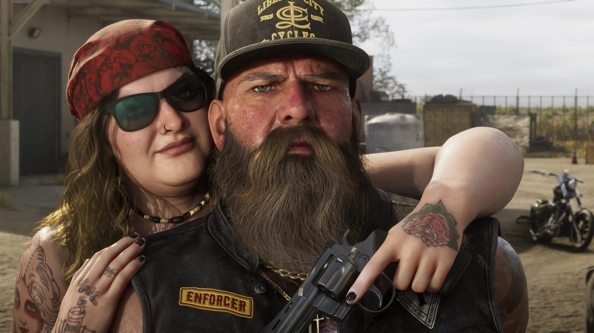

GTA 6 age rating & parents guide

The straight answer for parents
Grand Theft Auto VI carries the highest mainstream age ratings in almost every country. The ratings boards describe content including violence, nudity, strong sexual content, strong language, and drug and alcohol use. If you are deciding whether this game is appropriate for your child, the official ratings say it is made for adults. At launch it is a single-player game, there is no online mode at launch, so there is no contact with strangers in the game itself, but the story content is adult throughout.
US & Canada: ESRB Mature 17+
The ESRB rates GTA 6 Mature 17+, with seven content descriptors: Blood and Gore, Intense Violence, Mature Humor, Nudity, Strong Language, Strong Sexual Content, and Use of Drugs and Alcohol. The rating also carries an "In-Game Purchases" notice, meaning the game offers items for real money. Confirmed
UK & Europe: PEGI 18
UK PlayStation and Xbox store listings show GTA 6 as PEGI 18, suitable only for adults. Confirmed PEGI's own detailed summary page for the game was posted on 2 October 2026 and later removed, so descriptor-level detail beyond the store label is not officially settled yet. Reported
Ratings in other countries
- Australia: R18+ (classified 27 August 2026) Confirmed
- Germany: USK 18 Confirmed
- Japan: CERO Z (18+) Confirmed
- South Korea: 19+ Confirmed
- Saudi Arabia & UAE: 21+ Confirmed
Parental controls on PS5
On PlayStation 5, Settings → Family and Parental Controls (Family Management) lets a parent or guardian restrict which games a child account can play based on age rating, and set spending limits. A child account cannot buy an M-rated (17+) game like GTA 6 without the family manager's approval. Setting the child's age level below 17 blocks the game from starting on that account.
Parental controls on Xbox
On Xbox, Microsoft Family settings and the free Xbox Family Settings app let parents restrict games by age rating and control purchases. With content restrictions set to the child's age, an 18-rated title is blocked, and any purchase needs the organiser's approval first.
Buying the game
Age ratings apply to every copy of the game equally, Standard and Ultimate editions alike. (The Collector's box is different: it contains no game at all, only physical collector's items.) See prices and editions compared before you buy, and head back to the GTA 6 Starter home page for the rest of our launch guides.